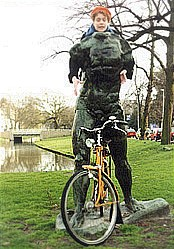

|  |  |  |  |  |
|
 click here to view larger image |
 |
Nienke and Rodin in Holland photograph size variable 1999 This Rodin sculpture used to just be standing in the grass here in Rotterdam by one of the canals. Anyone could climb on it ... so we did. This is another artist friend of mine, Nienke giving Rodin's man arms and a head. If you've ever been to Holland, you'll understand that BIKES are more Dutch than wooden shoes. Other composite photographs: Amy Behind the Church Door on Her Wedding Day Lisa Behind Bus-Stop Glass |